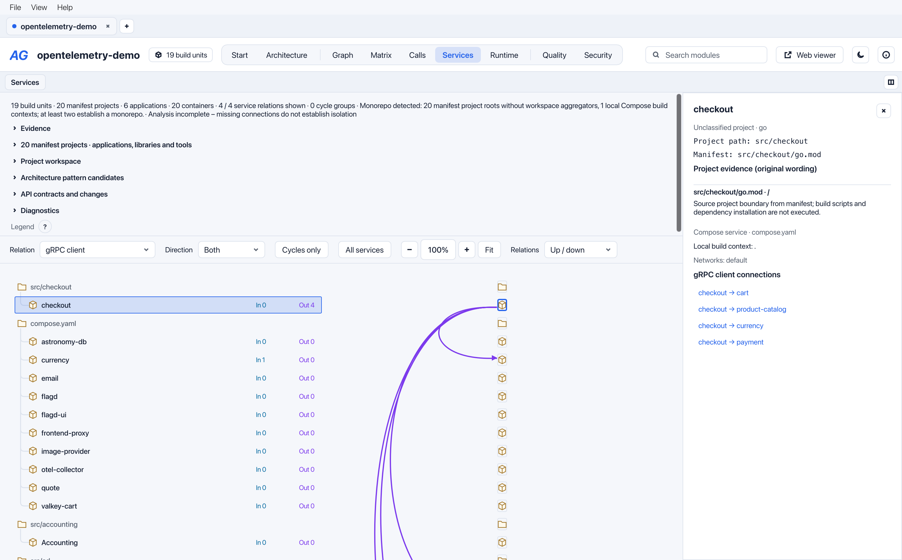

OpenTelemetry Demo
An online shop whose services are written in Go, Java, C#, TypeScript, Rust, PHP, Ruby, C++, Kotlin and other languages, wired together by one Docker Compose file. This example uses revision 33bd823107b1b38eaa88dd4ef625cc16d60475d4.
1. Get the example
Run from the ArchGuard repository root:
git clone https://github.com/open-telemetry/opentelemetry-demo.git examples/checkouts/opentelemetry-demo
git -C examples/checkouts/opentelemetry-demo checkout 33bd823107b1b38eaa88dd4ef625cc16d60475d4Open the folder in the ArchGuard desktop app with File → Open project…. On Linux and Windows you can also pass it on the command line: archguard-desktop examples/checkouts/opentelemetry-demo.
No configuration file, build or running container is needed. ArchGuard reads compose.yaml, the collector configuration and the service sources.
Analysis on 10 November 2026 with ArchGuard 0.3.1 found 20 manifest projects, 6 applications, 20 Compose containers and 105 service relationships: 46 startup dependencies, 34 configuration references, 19 configured HTTP endpoints, 4 gRPC client calls and 2 HTTP client calls.
2. Follow the order path in source
Open the Services tab, choose Relation → gRPC client and select checkout. Its details list four gRPC connections: cart, product-catalog, currency and payment.

For checkout → product-catalog, the evidence points to the GetProduct call in src/checkout/main.go:546 and to the endpoint binding in compose.yaml. The calls to currency (line 563) and payment (line 582) follow the same pattern; HTTP client shows checkout → email at line 604.
3. Inspect the configuration cycle
Choose Relation → Configuration reference and select otel-collector. The view reports one cyclic group with five services: frontend, frontend-proxy, image-provider, otel-collector and telemetry-docs. Cycles only reduces the view to its nine connections.

All five send telemetry to the collector. The collector points back because its configuration health-checks the proxy and reads the nginx status of the image provider (otelcol-config.yml:26-30). The connection otel-collector → frontend-proxy cites /services/otel-collector/environment/FRONTEND_PROXY_ADDR in compose.yaml; the JSON output below lists this evidence for every connection.
This is a monitoring back-reference, not a business call cycle. It shows why ArchGuard keeps configuration references, API calls and startup order apart.
archguard services examples/checkouts/opentelemetry-demo --format jsonEvidence boundary: coverage is reported as partial. Go calls use bounded local value flow; Python and Gradle source clients, dynamic endpoints and runtime overrides are not fully resolved. Only compose.yaml is analyzed; its variant files are reported as unmerged. These are static candidates, not observed traffic, and missing edges do not prove isolation.
Source: pinned OpenTelemetry Demo revision. Licensed under Apache-2.0; retain its upstream license. This example does not imply endorsement.